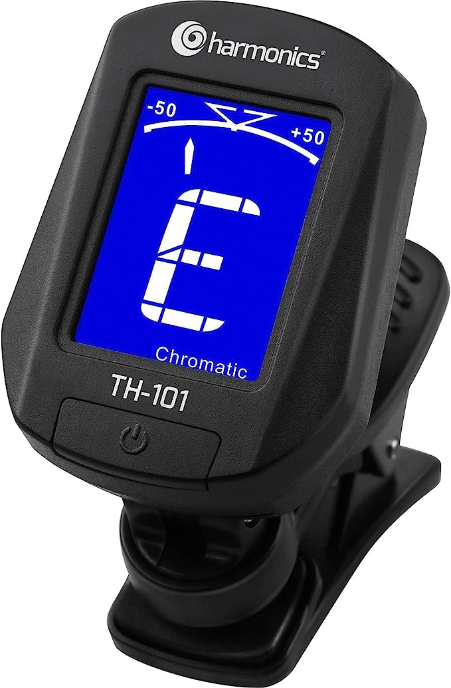

Afinador Clip CromáticoTH-101 HARMONICS
Sobre este item
- Forma de Afinação: A0 (27.5Hz) ~ C8 (4186.00Hz) Tipos de Afinação: Violão, Contrabaixo, Violino, Ukulele, Cromático Frequência: A4 440Hz Alimentação: 3V (01x Bateria CR2032)
- Componentes inclusos: Não aplicável
- Quantidade no pacote: 1
- Nome do modelo: TH-101